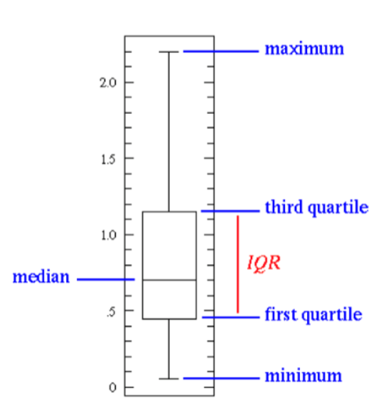
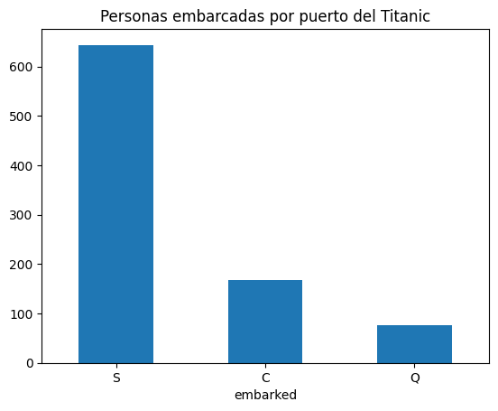
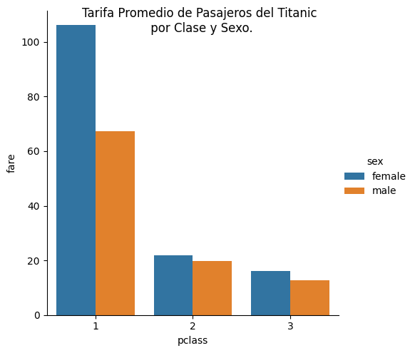

Toma de Decisiones Basadas en Datos e IA
Módulo 3 · Clase 1: Introducción
mayo 2026
¿Por qué visualizar?
La visualización de datos es la presentación de datos en forma gráfica para simplificar conceptos complejos y facilitar la detección de patrones.
Gracias a la evolución del cerebro humano, somos capaces de detectar patrones complejos a través de la visión en milisegundos — algo que tomaría minutos leyendo una tabla.
La regla de los 7 segundos
Si un gráfico no comunica su mensaje principal en menos de 7 segundos, simplifica o cambia el título. Un gráfico que requiere explicación es un gráfico mal hecho.

Ejemplo: la trampa del gráfico “bonito”

❌ Chartjunk — información enterrada en decoración visual

✅ Gráfico efectivo — mensaje claro en 3 segundos
Visualizaciones: Boxplot

Nota
Muestra: Mediana, IQR (rango intercuartílico) y outliers en un solo gráfico. Puede comparar múltiples grupos a la vez.
Tip
Los puntos fuera de los bigotes son outliers — casos atípicos que merecen atención especial. Pueden ser errores de datos o casos genuinamente excepcionales.

Visualizaciones: Scatter y Barras
Scatter Plot — relación entre dos variables

Muestra relaciones lineales/no-lineales (correlaciones) y outliers. Útil para: ¿están relacionados los presupuestos y los resultados? ¿el ausentismo afecta la productividad?
Bar Plot — comparación entre categorías


Compara valores entre categorías. El gráfico más usado (y más fácil de manipular) en reportes corporativos.
Los 4 pilares de la visualización efectiva
Según Noah Iliinsky, toda visualización debe responder estas 4 preguntas antes de diseñarse:
- Propósito → ¿Qué decisión o comprensión busco generar?
- Contenido → ¿Qué datos son realmente necesarios para eso?
- Estructura → ¿Cómo organizo la información para que fluya?
- Formato → ¿Qué tipo de gráfico sirve mejor?
Tip
El error más común: empezar por el formato (“quiero un pie chart”) en lugar del propósito (“quiero que entiendan que una categoría domina el 70%”).

🎉 ¡Gracias por Participar!
❓ ¿Preguntas?
👏 Responder encuesta
🥳 ¡Hasta la próxima clase!
Contacto:
- 🌐 fralfaro.github.io/portfolio
- 💼 linkedin.com/in/faam
- 📧 francisco.alfaro@usm.cl